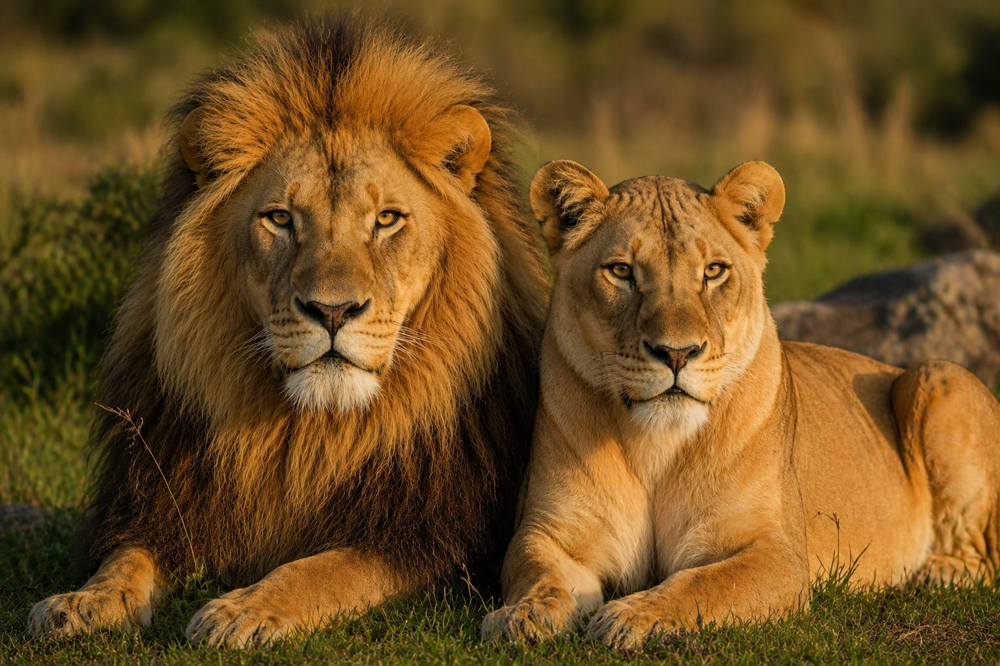
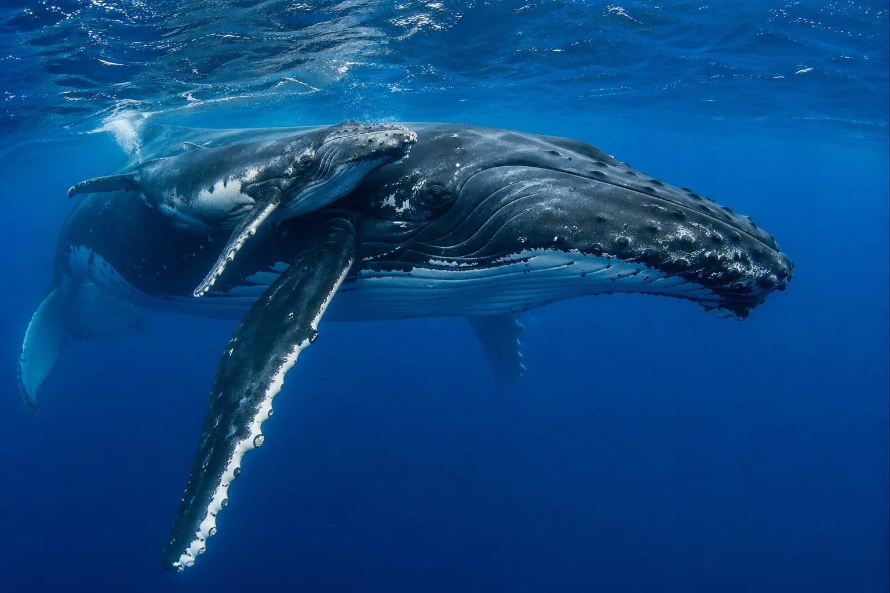
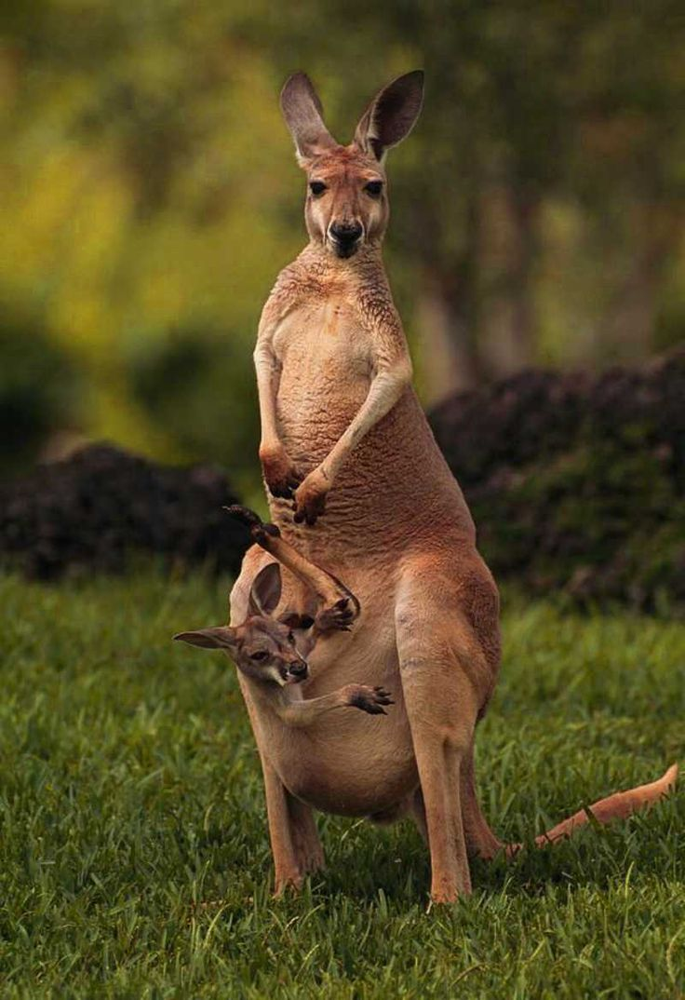
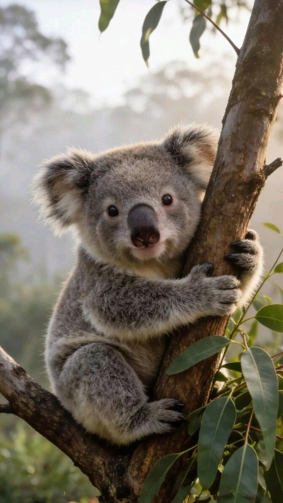
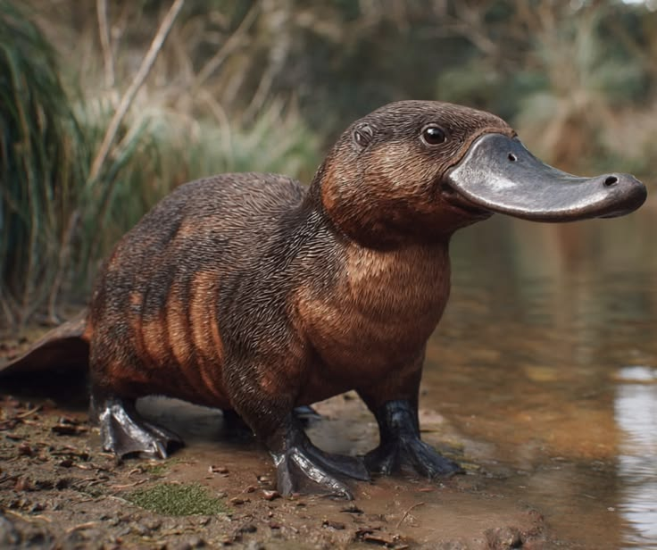
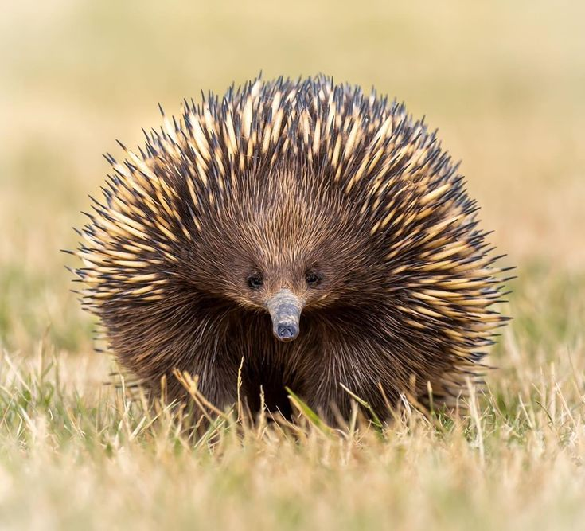

Mammals
Departments of mammals :
First: Placental mammals
Placental mammals make up about 90% of mammals due to the efficiency of their reproductive system , specifically the presence of the placenta, which provides a crucial evolutionary advantage compared to marsupials.

Scientific name: panthera leo
The lion's speed reaches 80 km/h, and the mass of an adult male is 190 kg and an adult female is 130 kg Lions are carnivores. Their lifespan is 15 to 16 years for females and 8 to 10 years for males.

Scientific Name : Catacea
Killer whales can reach speeds of up to 56 km/h, while fin whales can reach 47 km/h. Their combined mass ranges from 25,000 to 30,000 grams. Whales are carnivores, and their lifespan is between 50 and 90 years.
Second: Marsupials
Marsupials are a group of animals named for the pouches or sacs their females have on their abdomens, similar to the pouches a woman uses to carry her young. There are 260-280 species, 200 of which live in Australia, specifically in the northern islands of New Guinea and surrounding islands. Marsupials are also found in South America, and one species, the opossum, has even spread to North America.

Scientific Name : Macropus
The red kangaroo can reach speeds of up to 70 km/h. The eastern grey kangaroo weighs between 50 and 60 grams, the western grey kangaroo 26 grams, the red kangaroo 47 grams, and the furry kangaroo 38 grams. Kangaroos are herbivores. They can reach a length of 2.8 meters. The lifespan of an eastern grey kangaroo is 36 days, the western grey kangaroo 31 days, the red kangaroo 33 days, and the furry kangaroo 35 days.

Scientific Name : Phascolarctos Cinereus
Koalas can reach speeds of up to 30 kilometers per hour.
Their body mass ranges from 4 to 15 kilograms, and their length
from 60 to 85 centimeters.
Koalas are herbivores.The lifespan of a koala is 13 to 18 years.
Third: Monotremes
Monotremes, or monotremes, are an order of oviparous mammals. They possess a single passage for excretion and reproduction and share many characteristics with reptiles. Species within this order are distinguished by the following features: strong, numerous bones in the pectoral girdle; pinnate bones; cervical ribs; and the absence of lacrimal bones.

Scientific Name : Ornithorhynchus anatinus
The Platypus typically travels at speeds between 0.7 and 2.4 kilometers per hour. Males weigh 2.4 grams, while females weigh 1.6 grams. Males measure 50 centimeters in length, and females 43 centimeters in length. It is a carnivore and can sleep for up to 14 hours.

Scientific Name :Tachyglossidae
It is one of the most unique creatures on Earth, being one of the few mammals that lay eggs rather than give birth. It lives in Australia and New Guinea and is known for its spiny, hedgehog-like fur. It typically measures between 30 and 45 cm in length and weighs between 2 and 7 kg. Its maximum recorded speed is about 2.3 km/h. When threatened, it doesn't run, but rather curls into a spiky ball to protect its soft underside or quickly burrows into the ground to hide. The spiny anteater lacks teeth and uses its long, sticky tongue to catch ants and larvae. Its average lifespan in the wild is 14 to 16 years, but there have been cases of individuals in captivity living up to 50 years.